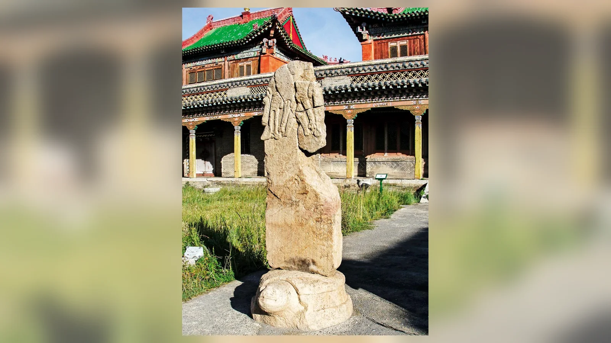
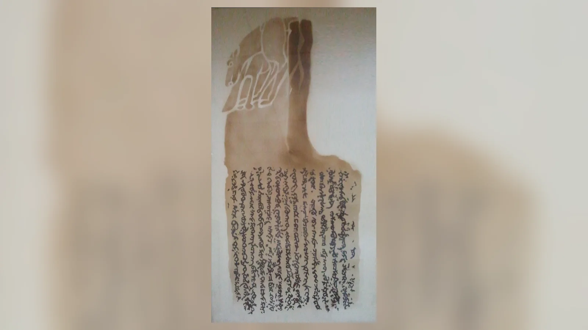
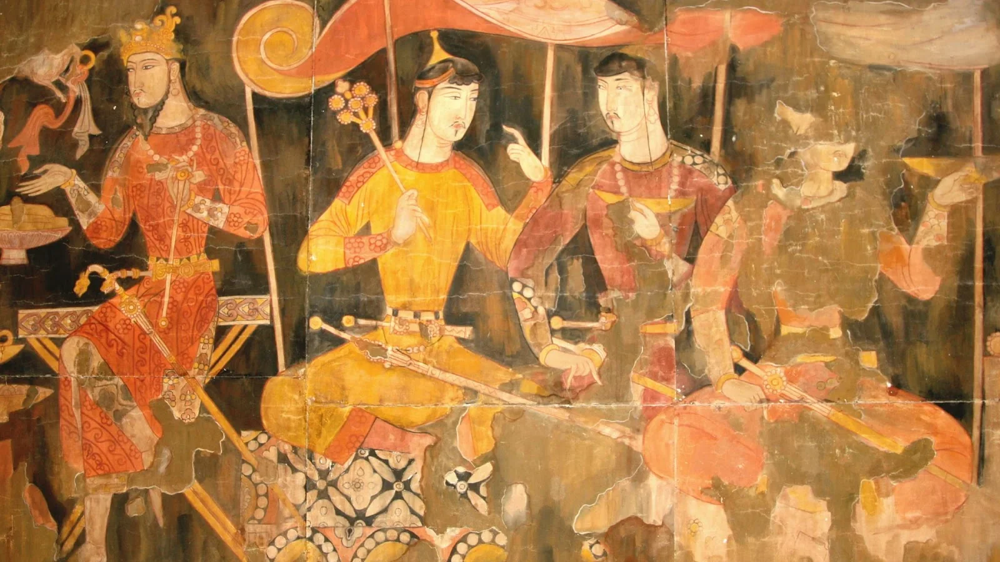
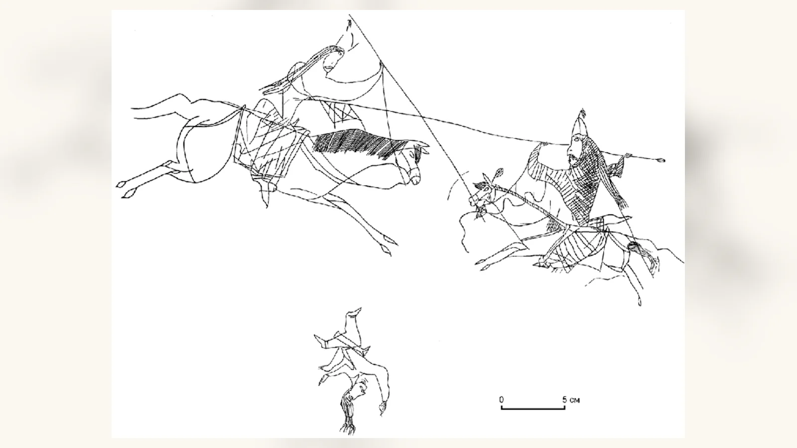
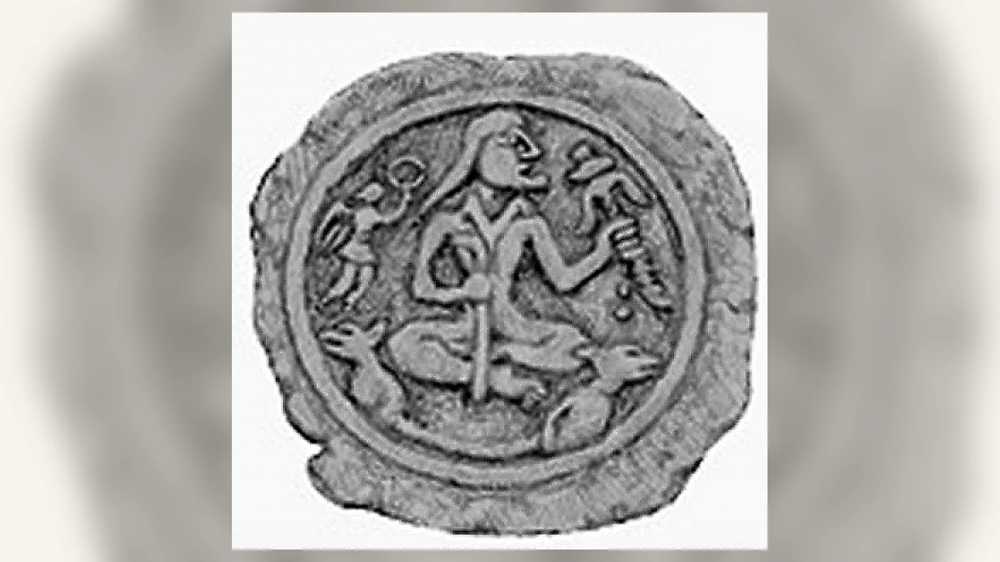
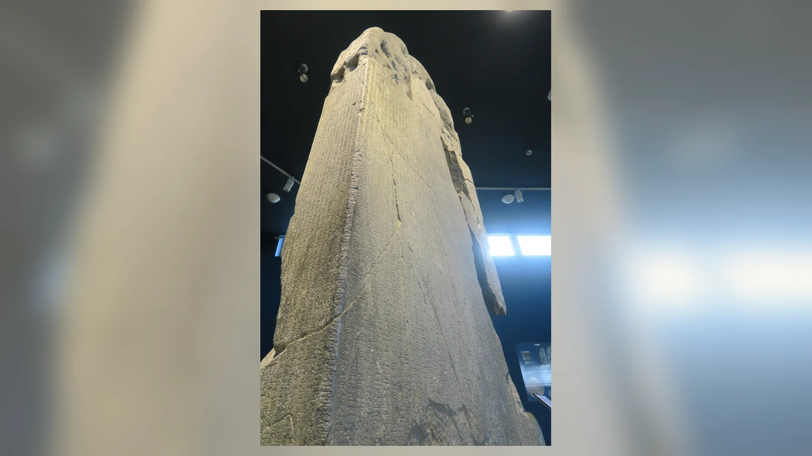
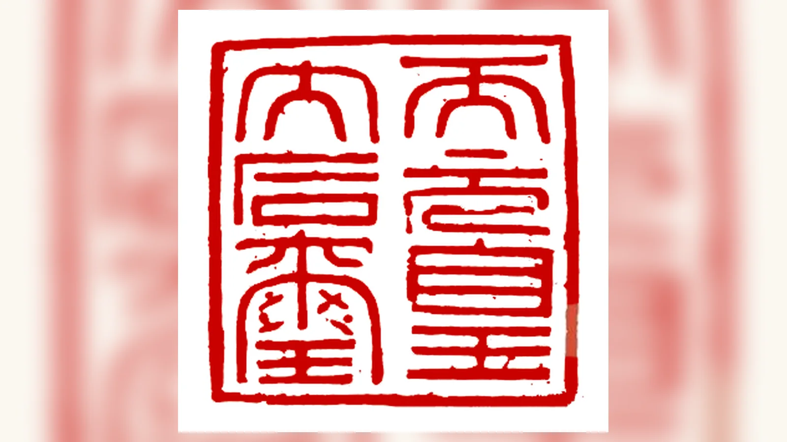

Göktürklerin kökeni hakkında 7. yüzyılda derlenen Çin hanedan tarihlerinde çarpıcı bir anlatı vardır: düşmanları tarafından yok edilen bir topluluktan sağ kalan küçük bir erkek çocuk, bir dişi kurt tarafından beslenir; daha sonra bu kurttan doğan oğullar yeni bir soyun başlangıcına dönüşür. Bugün bu hikâye çoğu zaman “Asena ve Bozkurt Efsanesi” adıyla anlatılıyor. Fakat yaygın anlatının en bilinen ayrıntısı eski kaynaklarda aynı biçimde bulunmaz. Dişi kurdun özel adı açıkça “Asena” olarak verilmez. Aşina/Ashina, öncelikle Göktürk kağanlarını çıkaran hükümdar hanedanının adıdır.
Bu ayrım efsanenin zaman içinde nasıl değiştiğini anlamanın anahtarıdır. Eski anlatıda adı olmayan dişi kurt yok edilmek üzere olan soyun devamını sağlar. Aşina ise bu köken anlatısıyla ilişkilendirilen hanedandır. Türkiye’de “Asena”nın doğrudan dişi kurdun adına dönüşmesi modern dönemde güçlenmiştir. Ziya Gökalp’in 1922’de Küçük Mecmua’da Aşina/Asena adını “kurt” anlamıyla ilişkilendirmesi bu modern yorum tarihinin önemli duraklarından biridir. Buna karşılık Aşina adının etimolojisi bugün de tartışmalıdır; “Asena Çincede kurt demektir” cümlesi güvenilir dilbilimsel sonuç değildir.
Asena’yı “eski Türklerin kurt tanrıçası” diye tanımlamak da kaynakların izin verdiğinden ileri gider. Elimizde Asena adlı bir tanrıçanın tapınağını, rahiplerini veya bağımsız kültünü gösteren erken kayıt yoktur. Kaynakların verdiği figür, soyun yok olmasını engelleyen mitolojik dişi kurttur: besler, korur, doğurur ve hanedan kökeninin olağanüstü başlangıcını oluşturur. Efsane biyolojik soy açıklaması değil, hükümdar ailesinin geçmişini anlamlandıran köken mitidir.
Asena ve Bozkurt Efsanesi Nedir?
Asena ve Bozkurt Efsanesi adıyla bilinen anlatı, Göktürk hükümdar hanedanının kökenini dişi kurt motifiyle açıklayan erken Orta Çağ rivayetlerine dayanır. En tanınmış varyantta bir topluluk düşman saldırısında yok edilir; küçük bir erkek çocuk sağ bırakılır. Ağır yaralanıp bataklığa terk edilen çocuğu dişi kurt etle besler. Çocuk büyüdüğünde kurt ondan gebe kalır. Düşmanlar çocuğu daha sonra öldürür; kurt kaçarak dağlarla çevrili güvenli bölgeye sığınır ve on oğul doğurur. Bu oğullardan gelişen soylardan biri Aşina adını taşır.
Anlatının başlıca erken tanıkları Zhoushu, Suishu ve Beishi gibi Çin hanedan tarihleridir. Bunlar Göktürklerin kendi dilinde yazılmış metinler değil, Çinli tarihçilerin dışarıdan kaydettiği bilgilerdir. Dolayısıyla hem çok değerli tanıklıklardır hem de kendi tarih yazımı bağlamları içinde okunmalıdır.
Bugün “Asena” dişi kurtla özdeşleşmiş olsa da tarihsel olarak üç katmanı ayırmak gerekir: eski metinlerdeki dişi kurt, ondan türediği anlatılan Aşina hükümdar soyu ve modern Türk kültüründe dişi kurda verilen Asena adı.
Bozkurt Efsanesinin Tam Hikâyesi
Çin kaynaklarındaki yaygın varyant, Göktürklerin atalarının düşman saldırısıyla yok edilmesiyle başlar. Yalnız küçük bir erkek çocuk hayatta kalır. Düşman askerleri onu öldürmek yerine uzuvlarını keserek bataklık veya sazlık alana bırakır. Ayrıntılar kaynak ve çevirilere göre değişir.
Bir dişi kurt çocuğu bulur, avladığı hayvanların etiyle besler ve yaşamasını sağlar. Çocuk büyüdükten sonra kurt ondan gebe kalır. Düşman hükümdarı çocuğun yaşadığını öğrenince yeniden asker gönderir. Çocuk öldürülür; kurt ise kaçar.
Kurt, Gaochang/Turfan’ın kuzeyi veya kuzeybatısıyla ilişkilendirilen dağlık bölgeye gider. Bir mağara ya da geçitten dışarıdan korunaklı, geniş ve otlarla kaplı ovaya ulaşır. Burada on erkek çocuk doğurur. Çocuklar büyüyüp dışarıdan kadınlarla evlenir ve ayrı soylar meydana getirir. Bunlardan biri Aşina adını alır.
Bazı aktarımlarda Aşina kolundan gelen kişi kardeşleri arasında üstünlük kazanır. Soyunun kurttan geldiğini hatırlatmak için otağının önünde kurt başlı sancak bulundurduğu anlatılır. Sonraki nesiller korunaklı bölgeden çıkar, Altay çevresine gelir ve Rouranların egemenliği altında demircilikle ilişkilendirilir. 552’de Bumin Kağan’ın Rouran hâkimiyetine son vererek Türk Kağanlığı’nı kurması ise efsanenin değil tarihsel siyasi sürecin parçasıdır.
Modern özetler bu unsurları tek kusursuz hikâyeye dönüştürür. Oysa mağara, ova, on oğul, Aşina, Altay ve demircilik ayrıntıları yakın kaynaklarda farklı biçimlerde aktarılır. Bunları hangi metinde bulunduğunu belirtmeden birleştirmek kaynakların gerçek yapısını bozar.
Zhoushu ayrıca başka bir köken geleneği aktarır. Burada Abangbu olarak çevrilen ata, kardeşler, olağanüstü yetenekler ve doğa unsurlarıyla ilişkili motifler vardır. Denis Sinor gibi araştırmacılar bunu terk edilen çocuğun kurt tarafından kurtarıldığı anlatıdan ayrı varyant olarak ele almıştır. Bu ikinci rivayet, Göktürk köken hafızasının tek değişmez metinden oluşmadığını gösterir.
Eski Çin Kaynakları Gerçekte Ne Söylüyor?

Zhoushu yaklaşık 629’da tamamlandı. Göktürk Kağanlığı’nın 552’de kuruluşu düşünüldüğünde metin olaylara görece yakın dönemde derlenmiştir. Suishu da 7. yüzyılın ilk yarısında hazırlanmış, Beishi yaklaşık 659’da tamamlanmıştır. Daha sonraki Tongdian gibi eserler önceki tarih geleneğini devralır.
Bu kaynakların ortak çekirdeğinde dişi kurt belirgindir: katliamdan kurtulan çocuk, kurdun koruması, soyun yeniden üremesi ve Aşina’ya bağlanan nesil. Fakat metinler ayrıntılarda farklılaşır. Üstelik birbirlerinden veya bugün kayıp ortak kaynaklardan yararlanmış olmaları mümkündür; bu yüzden her tekrar tamamen bağımsız tanıklık sayılmaz.
Çin tarihçileri yabancı adları karakterlerle yaklaşık ses karşılığı vererek kaydediyordu. 阿史那 biçiminin A-shih-na, Ashina, Ašina ve Aşina şeklinde aktarılması bu yüzdendir. Karakterleri modern Türkçe kelime gibi parçalayarak kesin etimoloji üretmek güvenilir değildir.
Hanedan tarihlerinin amacı folklor derlemek değildi. Komşu siyasi toplulukların kökenini, hükümdarlarını, âdetlerini ve coğrafyasını Çin tarih yazımının kategorileri içinde açıklıyorlardı. Dolayısıyla anlatının kayda geçirilmiş olması onun Göktürk siyasi kimliğiyle ilişkili olduğuna güçlü işarettir; fakat her cümlenin Göktürk anlatıcısından kelimesi kelimesine çevrildiğini kanıtlamaz.
Orhun Yazıtları’nın dişi kurt köken hikâyesini anlatmaması da önemlidir. 8. yüzyıldaki Kül Tigin ve Bilge Kağan yazıtları Türklerin kendi dilindeki büyük siyasi metinlerdir. Bumin ve İstemi Kağan’dan, devletin yükselişinden ve çöküşünden söz ederler; fakat Aşina’nın dişi kurttan doğuşunu tekrar etmezler. Bu sessizlik efsaneyi geçersiz kılmaz; farklı metin türlerinin geçmişi farklı biçimde seçtiğini gösterir.
Asena Gerçekten Dişi Kurdun Adı mı?
Modern Türkçede Asena denildiğinde efsanevi dişi kurt anlaşılır. Erken kaynaklara dönüldüğünde ise dişi kurda “Asena” diye açık özel ad verilmediği görülür. Çin metinlerindeki 阿史那, Göktürk hükümdar hanedanını ifade eden Aşina/Ashina adıdır.
Köken anlatısında dişi kurdun doğurduğu çocuklardan biri veya onun soyu Aşina adıyla ilişkilendirilir. Dolayısıyla “Aşina” ile “dişi kurt” eski anlatıda aynı unsur değildir. Modern anlatının yaptığı şey, hanedan adını soyun kurucu dişi kurduna özel ad olarak aktarmaktır.
Aşina adının kökeni de kesin değildir. Peter B. Golden, Doğu İranî dillerde “mavi” anlam alanıyla bağlantıyı ciddi ihtimal olarak değerlendirir. Başka araştırmacılar farklı İranî, Toharca veya Moğolca bağlantılar önermiştir. Erken Türk Kağanlığı’nın çok dilli Avrasya ortamında ortaya çıktığı düşünülürse yabancı kökenli hanedan adı şaşırtıcı olmaz.
“İsmin anlamı kurt” ile “hanedanın köken efsanesinde kurt vardır” aynı önerme değildir. Bir aile kurt kökenli mit taşıyabilir; bu, aile adının sözlük anlamının da kurt olmasını gerektirmez.
“Çincede Asena kurt demektir” iddiası ayrıca doğrudan sorunludur. Modern Mandarin’de kurt için 狼 (láng) kullanılır. 阿史那 yabancı hanedan adının Çince transkripsiyonudur. Bu nedenle popüler eşitlik tarihsel sembolizmle etimolojiyi birbirine karıştırır.
Türkiye’de Asena’nın dişi kurdun özel adı olarak yaygınlaşması 20. yüzyıl millî kültür üretimiyle bağlantılıdır. Ziya Gökalp 1922’de Küçük Mecmua’daki “Türk Devletinin Tekâmülü” yazısında Asena/Aşina adını kurt anlamıyla ilişkilendirmiştir. Dönemin Türkoloji bilgisinin parçası olan bu yorum, daha sonra popüler anlatıda sadeleşerek kesin bilgi gibi tekrarlanmıştır.
Burada ters yönde aşırıya kaçmamak gerekir. “Asena tamamen 20. yüzyılda uydurulmuş bir kelimedir” demek de yanlıştır; Aşina adı erken Çin kaynaklarında gerçektir. Modern olan, bu hanedan adının adı verilmeyen dişi kurda doğrudan özel isim olarak aktarılmasıdır.
Asena Bir Tanrıça mı, Mitolojik Ata mı?
“Asena Türklerin kurt tanrıçasıdır” cümlesi popüler internet içeriklerinde yaygındır; fakat bunu destekleyecek bağımsız kült kanıtı yoktur. Tarihsel anlamda tanrı veya tanrıça tanımlaması için yalnız olağanüstü özellik yetmez. İbadet, kurban, tapınak, rahiplik, dua veya varlığı açıkça ilah olarak sınıflandıran metinler gibi kanıtlar aranır.
Göktürk köken rivayetindeki dişi kurt olağanüstüdür. Çocuğu kurtarır, soyun yok olmasını engeller ve hanedanın kökeninde yer alır. Bu onu sıradan hayvandan ayırır; fakat otomatik olarak tanrıça yapmaz. “Mitolojik ata”, “soy kurucu dişi kurt” veya “hanedan köken anlatısının olağanüstü hayvanı” daha güvenli tanımlardır.
Kurt motifinin eski Türk dünyasında güçlü olması da Asena adlı bağımsız tanrıça kültünü kanıtlamaz. Tengri ve eski Türk inancı bağlamındaki Orhun yazıtlarında kağanın ordusu kurda, düşman koyuna benzetilir. Çin kaynakları kurt başlı sancaklardan söz eder. Bunlar kurdun askerî ve siyasi sembol gücünü gösterir.
“Totem” kelimesi de dikkat ister. Eski araştırmalarda kurt sıkça Türklerin totemi diye tanımlanmıştır. Oysa antropolojik totemizm belirli akrabalık ve toplumsal örgütlenme sistemleriyle ilgilidir. Hayvanın ata efsanesinde bulunması veya saygı görmesi tek başına klasik totemik sistem kanıtı değildir.
Aşina Hanedanı ile Dişi Kurt Arasındaki Bağ

Aşina Göktürk siyasi tarihinin merkezindeki hükümdar hanedanıdır. Bumin Kağan ve onu izleyen yönetici çevre bu soyla ilişkilidir. 552’de Rouran hâkimiyetine karşı kazanılan başarıyla Türk Kağanlığı kuruldu ve Aşina Avrasya’nın etkili hükümdar ailelerinden birine dönüştü.
Hükümdar soyunu olağanüstü kökene bağlamak eski dünyada yaygındır. Böyle anlatılar “neden bu aile yönetiyor?” sorusuna mitolojik cevap üretir. Göktürk rivayetinin dikkat çekici tarafı, soyun bir felaket sonrasında başlamasıdır. Hanedan yalnız olağanüstü atadan gelmez; yok edilmek istenen topluluğun mucizevi biçimde devam eden çizgisi olur.
On oğul motifi bu çerçevede farklı soyların ortaya çıkışını açıklayan mitolojik çoğalma şeması gibi görünür. Kaynaklar sayının gizli sembolik anlamını açıklamaz. İçlerinden Aşina’nın öne çıkması hükümdar soyunun daha geniş akrabalık dünyasındaki üstün konumunu açıklamaya yarar.
Kurt başlı sancak kaydı da köken mitinin siyasi simgeye dönüşmüş olabileceğini düşündürür. Hanedan kurttan türediğini anlatıyorsa, hükümdarlık işaretinde kurt başının bulunması geçmişi görünür siyasal sembole çevirir.
Göktürkler İçin Kurt Neden Bu Kadar Önemliydi?

Kurt bozkır dünyasında dayanıklı, uzun mesafe kat edebilen ve sürü hâlinde avlanan güçlü yırtıcıdır. Hayvancılıkla geçinen topluluklar için aynı zamanda gerçek tehdittir. Korku ve hayranlığın aynı hayvanda birleşebilmesi sembolik gücünü artırmış olabilir.
Göktürk bağlamında kurt en açık biçimde soyun devamı ve askerî güçle ilişkilidir. Köken anlatısında dişi kurt çocuğu korur; Orhun yazıtlarında kurt saldırgan ordunun benzetmesidir. Bir yerde besleyen ana, başka yerde savaşçı kuvvetin metaforudur.
Daha sonraki Türk anlatılarında yön gösterici kurt da görülür. Uygur harfli Oğuz Kağan anlatısında gök renkli kurt orduya rehberlik eder. Ancak bu figürü doğrudan Göktürklerin dişi kurduyla aynı karakter saymak doğru değildir. Benzer motifler farklı anlatılarda farklı işlev taşır.
Bütün Türk topluluklarının her çağda kurda aynı biçimde inandığını söylemek de mümkün değildir. “Türkler” adı altında çok farklı coğrafyalarda, dinlerde ve siyasi yapılarda yaşayan topluluklar vardır. Erken Göktürk hanedan sembolünü bütün Türk tarihine değişmeden yaymak anakronizm üretir.
Kurt Başlı Sancak Gerçekten Kullanıldı mı?

Çin kaynaklarında Göktürk hükümdar çevresinin sancaklarının tepesinde altın kurt başı bulunduğuna ilişkin kayıt vardır. Muhafızlarla “böri/kurt” arasında adlandırma bağı kuran bilgiler de aktarılır. Bu, kurt motifinin yalnız efsanede değil siyasi-askerî temsil alanında da bulunduğunu düşündürür.
Fakat yazılı kayıt ile arkeolojik nesne ayrılmalıdır. Bugün bulunan her hayvan biçimli metal parçayı “Göktürklerin kurt başlı sancağı” diye tanımlamak mümkün değildir. Provenans, tarihleme ve işlev açıkça gösterilmelidir.
Bugut Yazıtı bu konuda özel önem taşır. I. Türk Kağanlığı dönemine, yaklaşık 584–587’ye tarihlenen anıtın üst kabartması uzun süre dişi kurt ve çocuk tasviri olarak yorumlandı. Bu yorum, köken efsanesinin görsel kanıtı olarak çok tekrarlandı.
Ancak Mehmet Ölmez’in 2019 değerlendirmesi ve sonraki tartışmalar, kırık parçaların yeniden incelenmesiyle bu okumanın kesin olmadığını gösterir. Üst bölümün iki kurt veya Çin stel geleneğini taklit eden iki ejderha göstermesi ihtimalleri tartışılmaktadır. Dolayısıyla Bugut’u “Asena’nın kesin tarihî resmi” diye kullanmak doğru değildir.
Bozkurt Destanı ile Ergenekon Destanı Aynı mı?
Hayır. Modern anlatılarda iki gelenek sıkça birleştirilir: Türkler yok edilir, kurt kurtarır, Ergenekon’a girilir, demir dağ eritilir ve kurt rehberliğinde çıkılır. Eski metinler bu birleşik hikâyeyi aynı biçimde vermez.
Göktürk dişi kurt köken anlatısı 7. yüzyıl Çin hanedan tarihlerinde kayıtlıdır. Yaralı çocuk, dişi kurt, korunaklı bölge, on oğul ve Aşina soyu temel unsurlardır. “Ergenekon” adı bu erken anlatıda bulunmaz.
Ergenekon Destanı’nın en bilinen yazılı biçimi 14. yüzyıl başında Reşîdüddin’in Câmiü’t-tevârîh’inde Türk-Moğol soy gelenekleri bağlamında görülür. Kıyan ve Nüküz/Negüz’ün soyları felaketten sonra dağlarla çevrili Ergenekon’a sığınır, yüzyıllarca çoğalır ve nüfus arttığında demirli dağı eriterek dışarı çıkar. Ebülgazi Bahadır Han’ın 17. yüzyıldaki Şecere-i Türk’ü de bu geleneği aktarır.
Bu klasik Ergenekon metinlerinde “Asena adlı kurt topluluğa yol gösterdi” sahnesi temel unsur değildir. Modern dönemde kurt kökeni, Ergenekon ve başka rehber kurt motifleri birbirine yaklaşmıştır.
| Özellik | Göktürk dişi kurt anlatısı | Ergenekon |
|---|---|---|
| Erken temel kaynak | Zhoushu, Suishu, Beishi | Câmiü’t-tevârîh; sonra Şecere-i Türk |
| Kayıt dönemi | 7. yüzyıl | 14. ve 17. yüzyıl |
| Temel figür | Sağ kalan çocuk ve dişi kurt | Kıyan ve Nüküz/Negüz |
| Ana olay | Soyun kurt aracılığıyla yeniden başlaması | Kapalı yurtta çoğalma ve çıkış |
| Kurt | Kökenin merkezinde | Klasik biçimde çıkışın merkezî rehberi değil |
| Demir | Altay/demircilik bağlantısı | Demir dağın eritilmesi |
İki anlatının yok oluş, sığınma ve yeniden doğuş gibi ortak temaları vardır. Bu benzerlik tarihsel ilişki tartışmasını meşru kılar; fakat onları tek metin yapmaz.
Börteçine ile Asena Aynı Figür mü?
Hayır. Moğolların Gizli Tarihi Cengiz Han’ın soyunu Börte Çino/Börte Chino ile başlatır. Onun eşi Qo’ai Maral’dır. Börte Çino erkek kurt, Qo’ai Maral dişi geyik olarak çevrilir. Soy zinciri bu çift üzerinden ilerler.
Göktürk anlatısında ise insan erkek çocuğunu kurtaran ve ondan gebe kalan dişi kurt vardır. Börte Çino’yu “Asena’nın diğer adı” saymak hem cinsiyeti hem metin geleneğini değiştirir.
Börteçine biçimi Türkçe popüler literatürde yaygındır. Tarihsel Moğolca ad Börte Čino, Börte Chino veya Börte Cinö gibi aktarılır. Čino kurt anlamındadır; börte için mavi-gri, boz veya grimsi beyaz gibi farklı çeviriler bulunur.
Türk ve Moğol kurt gelenekleri karşılaştırılabilir; bozkır toplulukları yüzyıllarca temas hâlindeydi. Fakat benzer motif, karakterlerin aynı olduğunu kanıtlamaz.
Bozkurt Motifi Yalnızca Türklere mi Aittir?
Hayır. Kurt köken, koruyucu veya savaşçı simgesi olarak Avrasya’nın farklı kültürlerinde görülür. En ünlü örneklerden biri Roma’nın Romulus ve Remus anlatısıdır. İkizler ölüme terk edilir, dişi kurt tarafından emzirilir ve Roma’nın kuruluş geleneğine bağlanır.
Göktürk hikâyesinde de ölümden kurtarılan çocuk ve dişi kurt vardır. Ancak burada kurt soyun doğrudan mitolojik devamının parçasına dönüşür ve Aşina hanedanıyla ilişkilendirilir. Benzerlik, birinin diğerinden kesin olarak kopyalandığını kanıtlamaz.
Wusunlar hakkında Çin kaynaklarında da terk edilen çocuğun kurt ve kuş tarafından beslenmesi motifi bulunur. Bu durum kurtarıcı hayvan temasının Orta Asya’da Göktürklerden önce de bilindiğini gösterir.
Bir motifin başka toplumlarda bulunması Göktürk anlatısının değerini azaltmaz. Önemli olan hayvanın belirli kültürde hangi anlamı kazandığıdır. Göktürk örneğinde kurt, hükümdar soyunun felaketten sonra devamını açıklayan siyasi köken simgesidir.
Bozkurt Efsanesi Tarihsel Bir Olay mı?
Efsaneyi kelimesi kelimesine tarih raporu gibi okumak mümkün değildir. İnsan ile kurdun birleşmesinden hanedan doğması mitolojik unsurdur. Fakat bu, anlatının tarih için değersiz olduğu anlamına gelmez.
Köken mitleri toplumların ve hanedanların geçmişlerini nasıl anlamlandırdığını gösterir. Burada temel yapı yok oluş ile yeniden doğuştur: topluluk katledilir, çocuk kalır, olağanüstü kurtarıcı onu korur, soy çoğalır ve daha sonra siyasi iktidara ulaşır.
Aşina grubunun 5.-6. yüzyıl Orta Asya siyasi hareketliliğinde yükseldiği, Rouranlarla ilişkili olduğu ve 552’de bağımsız kağanlık kurduğu tarihsel çerçevede bilinir. Fakat efsanedeki katliamı belirli savaşa kesin biçimde eşitlemek için yeterli kanıt yoktur.
Korunaklı ovanın gerçek yerini belirlemeye çalışan araştırmalar Turfan’ın kuzeyi, Doğu Tianshan ve Barköl havzası gibi bölgeleri tartışmıştır. Coğrafi benzerlikler ilgi çekicidir; fakat mitolojik mekânın kesin arkeolojik teşhisi olarak sunulmamalıdır.
Demircilik ile Kurt Aynı Hafızada Nasıl Birleşiyor?
Çin kaynakları Aşina grubunu Altay çevresinde Rouranlar için demir işleyen toplulukla ilişkilendirir. Metal üretimi bozkır siyasetinde silah, at donanımı ve gündelik araçlar nedeniyle stratejik öneme sahipti.
Rouran hükümdarının Bumin’i küçümserken “demirci köle” anlamına gelen ifadeyle anması, demirciliğin siyasi hiyerarşi içinde aşağılayıcı söyleme de dönüştürülebildiğini gösterir. Bumin’in daha sonra Rouranları yenmesi, bu ilişkinin tarih anlatısında dramatik tersine dönüş yaratmasına elverişlidir.
Kurt kökeni ve demircilik aynı tarihsel hafızada buluştuğunda güçlü şema oluşur: felaketten kurtulan soy korunaklı bölgede çoğalır, Altay’a gelir, demircilikle ilişkilendirilir ve sonunda bağımsız kağanlık kurar.
Bu yapı, çok daha geç Ergenekon anlatısındaki demir dağı eriterek çıkış motifiyle kolayca birleşmiştir. Modern sentezin neden ikna edici göründüğü anlaşılabilir; fakat sembolik uyum kaynakların aynı olduğunu göstermez.
Köken Mitleri Neden Hanedanları Hayvanlarla İlişkilendirir?
Erken devletlerde hükümdarlık yalnız askerî başarıyla açıklanmaz; iktidarın neden belirli aileye ait olduğuna dair geçmiş anlatısı da gerekir. Olağanüstü doğumlar, göksel işaretler ve hayvan atalar bu ihtiyaca cevap verebilir. Böyle bir anlatı hükümdar soyunu sıradan akrabalıktan çıkarıp olağanüstü düzene bağlar.
Göktürk örneğinde kurdun hükümdara güç vermesinden önce soyun yok olmasını engellemesi dikkat çekicidir. Meşruiyetin başlangıç noktası fetih değil hayatta kalıştır. Daha sonraki kağanlık başarısı, “ölmesi gereken ama korunmuş soyun yükselişi” olarak anlam kazanabilir.
Dişi kurdun rolü bu nedenle özellikle önemlidir. İnsan çocuk tek başına yeni topluluk kurmaz; soyun mitolojik geçişi kurdun bedeni üzerinden gerçekleşir. Figürü yalnız savaşçılık sembolüne indirgemek anlatının yarısını kaybettirir.
Modern çağda hanedan mitleri ulusal anlatıya taşındığında hanedan ile halk arasındaki sınır kolayca silinir. Eski kaynakta özellikle Aşina hükümdar soyunu açıklayan motif, modern anlatıda “bütün Türklerin kökeni” biçimini alabilir. Bu dönüşüm kültürel olarak anlaşılır, fakat kaynak düzeyinde aynı iddia değildir.
Köken Anlatısının İkinci Varyantı Neden Önemli?
Dişi kurt tarafından kurtarılan çocuk anlatısı bugün açık ara en tanınmış Göktürk köken hikâyesidir. Fakat Zhoushu aynı bölümde başka bir rivayet daha aktarır. Bu ikinci gelenekte olay, bütün topluluğun yok edilip tek çocuğun kalmasıyla başlamaz. Türklerin ataları farklı kardeşlerden oluşan bir soy çevresinde anlatılır; bunlardan birinin annesi kurtla ilişkilendirilir ve soy üyelerine olağanüstü nitelikler verilir. Ateş yakma, tabiat şartlarına hükmetme ve farklı doğa unsurlarıyla bağlantı kurma gibi motifler ön plana çıkar.
Bu varyantın ayrıntıları modern popüler anlatılarda genellikle ilk hikâyeye eklenir veya tamamen atlanır. Oysa tarihsel açıdan değeri büyüktür. Aynı Çin tarih eserinin peş peşe iki farklı köken rivayeti vermesi, 6.-7. yüzyıl Türk çevresinde tek bir resmî “yaratılış kitabı” bulunduğunu düşünmememiz gerektiğini gösterir. Sözlü gelenekte aynı hanedan veya topluluk için birden fazla açıklama yan yana yaşayabilir.
Denis Sinor bu rivayetleri birbirinden ayırarak incelemiş ve ilkini terk edilmiş çocuğun kurt tarafından büyütülmesi ekseninde sınıflandırmıştır. Böyle bir yöntem önemlidir; çünkü farklı rivayetleri tek anlatıya dönüştürdüğümüzde hangi motifin hangi kaynaktan geldiğini göremeyiz. Bugün internette karşılaşılan uzun “Asena Destanı” metinlerinin bir bölümü tam da bu nedenle tarihî kaynaktan daha düzenli görünür: yüzyıllar boyunca ayrı duran ayrıntılar modern yazar tarafından tek olay örgüsünde birleştirilmiştir.
İkinci varyant aynı zamanda kurdun anlamının yalnız annelikle sınırlı olmadığını gösterir. Kurtla bağlantılı soy olağanüstü kabiliyet, seçilmişlik ve siyasi üstünlük fikirleriyle birlikte düşünülebilir. Bununla birlikte kaynakların açıkça söylemediği ayrıntıları “kurt kültü” veya “şaman tanrıçası” gibi hazır kategorilere dönüştürmek yine doğru olmaz.
Birden fazla köken rivayetinin bulunması efsanenin güvenilirliğini azaltan bir kusur değildir. Mitolojik geleneklerin doğası budur. Sözlü anlatı yaşayan toplumla birlikte değişir; siyasi merkezler, evlilik ilişkileri, yeni coğrafyalar ve komşu kültürlerle temas farklı varyantların oluşmasına yol açabilir. Tarihçi açısından asıl soru “hangisi gerçek masal?” değil, “bu farklı anlatılar hangi kimlik ihtiyacına cevap veriyordu?” olmalıdır.
Aşina Adının Kökeni Hakkında Neden Kesin Konuşamıyoruz?
Aşina adının kökeni, Göktürk tarihi üzerine en fazla tartışılan dil meselelerinden biridir. Çin kaynakları adı 阿史那 karakterleriyle kaydeder. Bu karakterler yabancı bir adın sesini yaklaşık olarak yansıtır; özgün dilde nasıl telaffuz edildiğini birebir koruyan ses kaydı değildir. Üstelik 6. yüzyıl Çincesinin ses değerleri modern Mandarin ile aynı değildir.
Bu nedenle etimoloji çalışmaları tarihî Çince ses rekonstrüksiyonunu, İranî dilleri, Toharcayı, Eski Türkçeyi ve bazen Moğolcayı birlikte değerlendirmek zorundadır. Peter B. Golden’ın üzerinde durduğu Doğu İranî açıklama, Hotanca-Saka āššena/āššēna ve benzeri “mavi” renk adlarıyla bağlantı ihtimaline dayanır. Bu görüş, “Kök Türk” adındaki renk kullanımını da karşılaştırma alanına alır. Fakat bu açıklama dahi mutlak kesinlik olarak sunulmaz.
Başka araştırmacılar Aşina’yı kurt anlamına gelen kelimelerle ilişkilendirmeye çalışmıştır. Bu yaklaşım efsanenin içeriği nedeniyle çekicidir: hanedan kurt kökenlidir, dolayısıyla hanedan adı da kurt demek olmalıdır. Ancak semantik uygunluk tek başına sesbilimsel kanıt değildir. İki kelimenin anlam bakımından birbirine yakışması onların aynı kökten geldiğini göstermez.
Erken Türk yönetici çevresindeki adların hepsinin açık Eski Türkçe etimolojiye sahip olmaması da önemlidir. Türk Kağanlığı, Çin, Soğd, İranî ve Tohar çevrelerinin kesiştiği çok dilli dünyada ortaya çıktı. Siyasi seçkinlerin adlarında farklı dil katmanlarının bulunması tarihsel olarak mümkündür.
Bu tartışmanın popüler kültürde kaybolmasının nedeni, kesin cevabın daha kolay anlatılmasıdır. “Asena kurt demektir” birkaç kelimede güçlü hikâye kurar. “Aşina’nın etimolojisi tartışmalıdır; Doğu İranî renk adı bağlantısı ciddi adaylardan biridir” cümlesi daha az sloganlaşabilir, fakat bilimsel duruma daha uygundur.
Asena adının günümüzdeki kadın adı işlevi ise ayrı bir dil olayıdır. Modern toplum tarihî adı yeni anlamla benimseyebilir. Bugün bir ismin “dişi kurt” çağrışımı taşıması, onun 6. yüzyılda aynı sözlük anlamına sahip olduğunu kanıtlamaz. Modern anlam tarihsel etimolojinin yerine geçirilemez.
Kurt Başlı Sancak, Muhafızlar ve Siyasi Dil
Çin kaynaklarında kurt başlı sancak bilgisinin köken rivayetiyle yan yana bulunması tesadüf sayılamayacak kadar dikkat çekicidir. Hükümdar ailesi soyunu kurda bağlayan anlatıyla tanımlanırken kağanlık otoritesinin görünür işaretlerinden birinde de kurt başı kullanıldığı aktarılır. Bu durum mit ile siyasal temsil arasındaki bağı güçlendirir.
Sancak bozkır siyasi kültüründe yalnız kumaş parçası değildir. Hükümdarın veya askerî birliğin varlığını görünür kılar; ordunun toplanma noktasını ve komuta merkezini işaretleyebilir. Dolayısıyla sancağın tepesine yerleştirilen hayvan başı dekoratif seçimden daha fazla anlam taşıyabilir.
Bazı Çin kayıtlarında kağanın muhafızlarının “kurt”la bağlantılı bir adla anılması da aynı sembolik alanı genişletir. Araştırmacılar Çince transkripsiyonların Eski Türkçe böri kelimesini yansıttığını değerlendirmiştir. Böylece kurt, geçmişteki soy atasından yaşayan askerî seçkinliğin adına uzanan bir simge hâline gelir.
Orhun yazıtlarındaki “babam kağanın ordusu kurt gibi, düşmanı koyun gibi idi” benzetmesi ise Türkçe iç kaynaktan gelen ayrı bir kanıttır. Burada kurt soy atası olarak değil saldırgan askerî üstünlüğün metaforu olarak kullanılır. Bu ifade, kurdun olumlu savaşçı çağrışımının Türklerin kendi siyasi söyleminde de bulunduğunu gösterir.
Yine de üç kanıt türünü birbirine dönüştürmemek gerekir. Köken efsanesi hanedan geçmişini, sancak siyasi simgeyi, Orhun benzetmesi askerî gücü anlatır. Hepsinde kurt bulunması ortak sembolik alanı gösterir; fakat bunların her birini “kurt tanrısına ibadet” kanıtı saymak mümkün değildir.
Bugut Yazıtı Neden Asena İçin Hem Önemli Hem Tehlikeli Bir Kanıt?

Bugut Anıtı I. Türk Kağanlığı döneminden kaldığı için olağanüstü önem taşır. Orhun Yazıtları’ndan yaklaşık bir buçuk yüzyıl daha eski olan anıtın Soğdca metni, erken kağanlığın siyasi ve kültürel dünyasını doğrudan aydınlatır. Bu nedenle üst bölümündeki hayvan kabartmasının kurt köken efsanesiyle ilişkilendirilmesi uzun süre son derece çekici olmuştur.
Eski yayınlarda kabartma, altında veya karnında çocuk bulunan dişi kurt olarak tanımlandı. Çin kaynaklarındaki yaralı çocuk-kurt hikâyesi bilindiği için görüntü ile metin birbirini tamamlıyor gibi görünüyordu. Bu yorum daha sonra çok sayıda kitapta “Göktürklerin kurttan türeyiş efsanesinin arkeolojik kanıtı” şeklinde tekrarlandı.
Sorun, anıtın üst bölümünün kırık olmasıdır. Yeni parçaların değerlendirilmesi ve daha ayrıntılı görüntüleme, ilk çizimlerin sandığı kadar açık bir sahne bulunmadığını ortaya koydu. Mehmet Ölmez, parçalar bir araya getirildiğinde geleneksel emziren kurt-çocuk yorumunun sürdürülemeyeceğini belirtmiştir. Başka araştırmalarda iki kurt veya Çin stellerindeki ejderha düzeninin yerel taklidi ihtimali tartışılır.
Bu bilimsel değişim önemli bir metodoloji örneğidir. Bir arkeolojik görüntü bilinen efsaneye çok iyi uyduğunda, göz gördüğünü sandığı şeyi metne göre tamamlayabilir. Yeni fotoğraf, parça veya teknik inceleme geldiğinde eski yorum değişebilir. Antik Bilge’nin görsel kullanımında bu nedenle Bugut fotoğrafının altına “Asena çocuğu emzirirken” yazmak doğru değildir.
Anıt yine de makalede kullanılmalıdır; çünkü I. Türk Kağanlığı’nın gerçek maddi kültürüdür ve kurt/ejderha ikonografisi tartışmasının kendisi öğreticidir. Doğru figcaption, kesinlik iddiası yerine tartışmayı göstermelidir. Böylece görsel yalnız süs değil, tarihsel bilginin nasıl düzeltildiğini anlatan kanıta dönüşür.
Ergenekon ile Bozkurt Neden Zamanla Birleşti?
İki anlatının modern kültürde birleşmesi rastlantı değildir. Göktürk köken rivayetinde topluluk yok oluşun eşiğinden kurtulur, korunaklı alanda soy çoğalır ve daha sonra tarih sahnesine geri döner. Ergenekon’da da büyük yenilgiden sonra az sayıdaki insan dağlarla çevrili yere sığınır, nesiller boyunca çoğalır ve sonunda dışarı çıkar. Yapısal benzerlik son derece güçlüdür.
Demircilik iki gelenek arasında ikinci köprüyü oluşturur. Çin kaynaklarında Göktürklerin Altay’da Rouranlar için demir işlediği anlatılır. Ergenekon’da çıkışı mümkün kılan olay da demirli dağın eritilmesidir. Bu iki unsur modern millî anlatıda yan yana geldiğinde sanki aynı hikâyenin eksik parçalarıymış gibi görünür.
Kurt ise üçüncü köprüdür. Göktürk kökeninde dişi kurt soyun kurtarıcısıdır. Başka Türk destan geleneklerinde rehber kurt motifi bulunur. Ergenekon’dan çıkışın modern versiyonlarına yol gösteren bozkurt eklendiğinde üç ayrı hafıza alanı tek dramatik anlatıda birleşir: kurtarılma, demir dağın eritilmesi ve kurdun rehberliği.
Folklor açısından bu birleşme “yanlış” diye bir kalemde atılacak önemsiz olay değildir; modern mit yaratımının kendisidir. Fakat tarih yazımı açısından katmanların ayrılması gerekir. Bugün anlatılan birleşik Ergenekon-Bozkurt hikâyesinin kültürel gerçekliği vardır; 7. yüzyıl Çin kaynağında aynı metnin bulunduğunu söylemek ise tarihsel olarak yanlıştır.
Göktürklerin Kurttan Geldiğine “İnanması” Ne Demek?
Modern okuyucu “Göktürkler buna gerçekten inanıyor muydu?” diye sorduğunda inancı çoğu zaman iki seçenekli düşünür: ya hikâyeyi biyolojik gerçek kabul ediyorlardı ya da hiç inanmıyorlardı. Eski toplumların köken mitleri böyle basit çalışmaz.
Bir hanedan aynı anda tarihsel atalarını bilebilir ve soyunu olağanüstü ataya bağlayan törensel hikâyeyi kabul edebilir. Mitin doğruluğu modern bilimsel biyolojiyle değil, siyasi ve kutsal düzen içindeki işleviyle ölçülebilir. Roma seçkinlerinin Romulus anlatısını bilmesi, bütün Romalıların kendilerini genetik kurt torunu sayması anlamına gelmez.
Göktürkler için elimizde bu inancın nasıl öğretildiğini veya sıradan insanların onu hangi anlamda kabul ettiğini anlatan iç kaynak yoktur. Çin tarihçilerinin köken rivayetini kaydetmesi ve kurt sembolünün siyasi bağlamda görünmesi, anlatının önemli olduğunu gösterir. Bundan daha ileri psikolojik kesinlik üretmek mümkün değildir.
Bu nedenle “Göktürkler kurttan geldiklerine inanıyordu” yerine “Aşina hanedanının kökenini dişi kurtla ilişkilendiren rivayet erken kaynaklarda kayıtlıdır” demek daha güçlü tarih cümlesidir. İlk ifade bütün toplumun zihnini bildiğimizi varsayar; ikincisi elimizdeki kanıtı tarif eder.
Modern Asena Figürü Nasıl Eski Figürden Daha Belirgin Hâle Geldi?

Eski anlatının dişi kurdu güçlüdür ama kişiliği sınırlıdır. Adı verilmez; uzun konuşmalar yapmaz; ayrıntılı karakter özellikleri yoktur. İşlevi çocuğu korumak, soyun devamını sağlamak ve güvenli bölgeye kaçmaktır. Modern anlatı ise figüre “Asena” adını vererek onu bireyselleştirir.
Bir figüre özel ad vermek hafızada büyük değişiklik yaratır. “Dişi kurt” bir motifken “Asena” karaktere dönüşür. Resimlenebilir, şiirde konuşturulabilir, kadın adı olarak kullanılabilir ve başka kurt hikâyeleri onun çevresinde toplanabilir. Böylece modern kültür eski metnin boş bıraktığı alanı doldurur.
Bu süreç yalnız Türk mitolojisine özgü değildir. Modern ulusal kültürler eski, parçalı ve çoğu kez farklı dillerde korunmuş gelenekleri daha anlaşılır karakterlere ve olay örgülerine dönüştürür. Sorun bunu yapmak değil, modern düzenlemeyi eski kaynakta aynen varmış gibi göstermektir.
Asena örneği bu nedenle tarihçilik açısından öğreticidir. Bir bilgi internette milyonlarca kez tekrarlansa bile ilk kaynağa gidildiğinde farklı çıkabilir. “Herkesin bildiği” Asena ile 7. yüzyıl kaynaklarının dişi kurdu arasındaki mesafe, mitlerin nasıl yaşadığını gösterir.
Modern Asena’yı bütünüyle değersiz veya “sahte” saymak da aynı ölçüde yüzeysel olur. O, modern Türk kültürünün gerçek bir figürüdür. Yapılması gereken, iki dönemi birbirine karıştırmadan anlatmaktır: eski Göktürk köken miti bir tarihsel katman, Asena adıyla kişileştirilmiş dişi kurt ise bu mirasın modern yorum katmanıdır.
Bozkurt Efsanesinde Mağara ve Korunaklı Yurt Motifi
Dişi kurdun düşmanlardan kaçarak dağ içindeki korunaklı bölgeye ulaşması, anlatının en dikkat çekici mekân değişimidir. Hikâye önce açık dünyadaki felaketle başlar; topluluk yok edilir ve sağ kalan çocuk bile düşmanların erişebildiği alanda güvende değildir. Kurt ancak erişilmesi güç bir yere çekildiğinde soyun devamı mümkün olur. Bu nedenle kapalı mekân, basit saklanma noktası olmaktan daha büyük anlatısal işleve sahiptir.
Bazı çeviriler bu alanı dağdaki mağaranın ardında bulunan, çevresi dağlarla kapalı geniş ova biçiminde tasvir eder. Coğrafyanın Turfan/Gaochang’ın kuzeyi veya kuzeybatısıyla ilişkilendirilmesi, araştırmacıları gerçek bir havza aramaya yöneltmiştir. Barköl ve Doğu Tianshan çevresi bu tartışmalarda öne çıkan yerler arasındadır. Fakat topoğrafyanın efsaneye benzemesi tek başına kesin yer tespiti sağlamaz.
Korunaklı yurt motifi daha sonraki Ergenekon anlatısıyla kurulabilecek yapısal benzerliğin de temelidir. Her iki gelenekte dış dünyadaki büyük felaketten sonra dağlarla çevrili alan, soyun çoğaldığı geçici güvenlik mekânıdır. Ancak Göktürk kurt anlatısındaki bu bölgeye “Ergenekon” adı verilmez. Benzer yapı, aynı özel ad anlamına gelmez.
Anlatının yapısı üzerinden ölçülü bir yorum yapılabilir: dışarıdaki siyasi düzen çöktüğünde soy doğanın içinde korunur, güç kazandıktan sonra yeniden dış dünyaya döner. Böylece dağ ve mağara, yenilgi ile yeniden tarih sahnesine çıkış arasındaki ara mekâna dönüşür. Bu yorum metnin açık teolojik açıklaması değildir; olay örgüsünün düzeninden çıkarılabilecek anlamdır.
Dişi Kurt Neden Erkek Değil?
Göktürk köken anlatısında kurdun dişi olması hikâyenin kurulabilmesi için zorunlu işlev taşır. Kurt yalnız çocuğu koruyan hayvan değildir; yeni nesli doğuran varlıktır. Hanedanın sürekliliği onun anneliği üzerinden açıklanır. Bu nedenle modern görsellerde kurdu yalnız saldırgan savaş sembolü şeklinde göstermek, eski anlatının merkezindeki koruyucu ve doğurucu rolü eksiltir.
Bu durum Asena’nın modern dönemde kadın adı olarak benimsenmesini de anlaşılır kılar; ancak modern adlandırma ile eski anlatısal işlev yine ayrılmalıdır. Eski kaynak “Asena adlı kadın-kurt tanrıça” yaratmaz. Adı belirtilmeyen dişi hayvanın cinsiyeti, soyun doğuş mekanizması nedeniyle önemlidir.
Dişi kurdun çocuğu önce beslemesi sonra soyun devamını sağlaması iki aşamalı koruma kurar. İlk aşama bireyin hayatta kalması, ikinci aşama topluluğun geleceğinin kurulmasıdır. Bu nedenle efsanenin yalnız “güçlü kurt” şeklinde özetlenmesi yetersizdir. Kurt savaşçıdan önce bakıcı ve soy kurucudur.
Aynı ayrıntı, anlatının siyasi meşruiyet boyutunu da güçlendirir. Aşina hanedanı yalnız düşmandan kaçmayı başarmış insan grubundan değil, yok oluş anında olağanüstü biçimde korunmuş bir birleşmeden doğar. Böylece hükümdar soyunun başlangıcı sıradan soy kütüğünün ötesine taşınır.
Bu noktadan “ana tanrıça kültü” sonucu çıkarmak ise kanıtı aşar. Mitolojik anlatıda annelik işlevi ile tarihsel din içinde tanrıça statüsü aynı değildir. Asena hakkındaki modern yanlış bilgilerin önemli kısmı tam olarak bu iki düzeyi birbirine karıştırmaktan doğmuştur.
Cumhuriyet Döneminde Asena ve Bozkurt İmgesi
- yüzyıl sonu ve 20. yüzyıl başında Türk tarihi ve folkloruna ilgi arttıkça eski köken anlatıları modern millî kimlik tartışmalarına taşındı. Ziya Gökalp bu dönüşümün etkili isimlerindendi. 1922’de Aşina/Asena adını kurt anlamıyla ilişkilendirmesi modern terminolojinin şekillenmesinde dikkat çekici örnektir.
Cumhuriyet’in ilk yıllarında bozkurt imgesi edebiyat, tarih anlatısı, kurum amblemleri ve çeşitli görsel tasarımlarda kullanıldı. 1924’te kurulan Türkiyat Enstitüsü’nün erken ambleminde bozkurt bulunması, eski sembolün modern bilim ve millî kültür projesinde nasıl yeniden anlamlandırıldığını gösterir.
Bu kullanım Göktürk çağındaki anlamın değişmeden devamı değildir. Modern ulus-devletler geçmişten semboller seçer ve onlara yeni bağlamlar verir. Asena adı da bu süreçte eski metinlerde sahip olmadığı belirgin özel kişiliği kazanmıştır.
Bozkurt daha sonraki dönemlerde farklı siyasi hareketlerce de sahiplenildi. Bu modern siyasi anlamı gizlemek doğru olmaz; fakat 6. yüzyıl Göktürk sembolünü doğrudan bugünkü siyasi kimliklerden biriyle özdeşleştirmek de anakronizmdir.
Asena ve Bozkurt Efsanesi Bugün Neden Hâlâ Güçlü?
Anlatının kalıcılığını yalnız modern siyasetle açıklamak yetersizdir. Hikâyenin yapısında güçlü bir tema vardır: tamamen yok edildiği düşünülen soyun geri dönmesi.
Başlangıç zafer değil yenilgidir. Hayatta kalan kişi güçlü savaşçı değil, ağır yaralı çocuktur. Soyun devamı insan toplumundan değil vahşi Doğadan gelen dişi kurt sayesinde mümkün olur. Kurt böylece savaşçı vahşetin yanında besleyen ve koruyan figürdür.
Dağlarla çevrili güvenli alan da ölüm dünyasından sonra yeni hayatın üretildiği mekândır. Soy burada çoğalır ve yeniden dışarı çıkar. Bu yapı “yeniden doğuş” yorumuna açıktır; ancak eski kaynakların bu sembolizmi açıkça açıklamadığı unutulmamalıdır.
Modern anlatıda efsanenin “yok olduk sanıldık, yeniden doğduk” biçiminde okunması güçlü kolektif duygu üretir. Fakat sadeleştirme sırasında Aşina kurdun adı yapılmış, Ergenekon aynı hikâyeye eklenmiş, Börteçine Asena’yla eşitlenmiş ve farklı dönemler tek anlatı gibi sunulmuştur.
Dişi Kurdun Anlamı: Soyun Anası mı, Hanedanın Simgesi mi?
Kanıtlar birlikte değerlendirildiğinde Göktürk köken anlatısındaki dişi kurdun en güçlü işlevi tanrıça olmaktan çok soyun devamını sağlayan mitolojik ana figür olmaktır. Hikâyede önemli olan adı değil yaptığı şeydir: yaralı çocuğu besler, yok oluştan kaçırır ve yeni nesli doğurur.
Anlatı bireysel kahramanlık destanından farklıdır. Sağ kalan çocuk büyük savaş kazanarak halkını kurtarmaz; bazı varyantlarda düşmanlar onu daha sonra öldürür. Soyun devamını gerçekleştiren asıl aktör dişi kurttur.
Buradan çıkarılabilecek makul sonuç, efsanenin Aşina hanedanını “olağanüstü biçimde korunmuş soy” olarak meşrulaştırdığıdır. Hanedan sıradan aile değil, yok edilmek istenen topluluğun doğaüstü biçimde devam eden çizgisi hâline gelir.
Dişi oluşu anlatısal olarak önemlidir; soyun yeniden üretimi onun üzerinden gerçekleşir. Fakat annelik ve doğurganlık işlevi, “doğurganlık tanrıçası” kültünün kanıtı değildir. Bu ikisini ayırmak gerekir.
En dikkat çekici dönüşüm modern çağdadır. Eski metinlerde özel adı açıkça bulunmayan dişi kurt, Asena adıyla kişileşmiş; farklı kurt gelenekleri çevresinde birleşmiş ve modern millî sembolizmin parçası olmuştur.
Bu ayrımlar özellikle efsanenin okul kitapları, sosyal medya ve popüler tarih içeriklerinde aktarılmasında önem taşır. Kaynakların birbirinden ayırdığı unsurları yeniden ayırmak hikâyeyi zayıflatmaz; aksine Göktürk köken anlatısının gerçek tarihsel katmanlarını ve modern dönemde geçirdiği dönüşümü daha görünür hâle getirir.
Bir Köken Efsanesinden Millî Sembole
Asena ve Bozkurt Efsanesi’nin tarihsel yolculuğu, mitlerin yüzyıllar boyunca aynı kalmadığını gösterir. 7. yüzyıl Çin tarihçilerinin kaydettiği çekirdekte katliamdan kurtulan çocuk ile onu besleyip soyunu devam ettiren dişi kurt vardır. Aşina hükümdar soyunun adıdır. Ergenekon, Börte Çino ve modern “Asena” kişiliği ise başka metin ve dönemlerin ürünleri olarak daha sonra aynı kültürel hafızada yan yana gelmiştir.
Bu ayrımlar efsaneyi küçültmez. Tersine, onu tek seferde yaratılmış masaldan daha ilginç hâle getirir. Karşımızda farklı siyasi dünyalarda yeniden anlamlandırılan uzun ömürlü bir hafıza vardır.
“Asena kimdir?” sorusunun doğru cevabı bu yüzden iki katmanlıdır. Modern Türk kültüründe Asena, Göktürklerin dişi kurt köken anlatısındaki kurda verilen yaygın addır. Erken kaynaklarda ise dişi kurdun özel adının Asena olduğu açıkça yazmaz; Aşina, Göktürk hükümdar hanedanının adıdır.
Bozkurt efsanesinin asıl gücü “Türkler bir hayvandan türedi” gibi düz biyolojik iddiada değildir. Hikâyenin kalbinde yok edilmek istenen soyun korunması vardır. Dişi kurt vahşi doğadan gelir fakat soyun düşmanı değil kurtarıcısı olur; çocuğu besler, güvenli yere taşır ve geleceğin hanedanını mümkün kılar.
Bu nedenle kurt, yenilgi ile yeniden kuruluş arasındaki geçiştir. Yüzyıllar sonra sembolün hâlâ güçlü olmasının nedenlerinden biri de budur: anlatı geçmişteki bir hayvanı değil, yok oluştan sonra yeniden başlayabilme fikrini taşır.
Sıkça Sorulan Sorular
Asena kimdir?
Modern Türk kültüründe Asena, Göktürklerin köken efsanesindeki dişi kurda verilen yaygın addır. Ancak erken Çin hanedan tarihlerinde dişi kurdun özel adı açık biçimde Asena olarak verilmez. Aşina/Ashina, esas olarak Göktürk kağanlarını çıkaran hükümdar hanedanının adıdır.
Asena gerçekten dişi kurdun adı mı?
Erken kaynaklara göre bunu kesin söyleyemeyiz. Zhoushu, Suishu ve Beishi dişi kurdu anlatır fakat ona “Asena” diye açık özel ad vermez. Türkiye’de Asena’nın dişi kurdun adı olarak kullanılması modern dönemde yaygınlaşmıştır.
Asena bir Türk tanrıçası mı?
Asena adına ait tapınak, rahiplik veya bağımsız kült gösteren erken kaynak bulunmaz. Dişi kurt olağanüstü, koruyucu ve soy kurucu figürdür. “Mitolojik ata” tanımı “tanrıça”dan daha güvenlidir.
Bozkurt Efsanesi hangi Türk devletine aittir?
En tanınmış dişi kurt köken anlatısı Göktürkler/Türk Kağanlığı ve Aşina hükümdar hanedanıyla ilişkilidir. 7. yüzyıl Çin hanedan tarihlerinde kaydedilmiştir.
Bozkurt Efsanesi’nin kısa özeti nedir?
Düşman saldırısından yaralı bir çocuk sağ kalır. Dişi kurt onu besler, ondan gebe kalır ve korunaklı bölgeye kaçarak on oğul doğurur. Aşina hükümdar soyu bu nesille ilişkilendirilir.
Aşina ile Asena aynı şey mi?
Tarihsel bağlamda Aşina/Ashina Göktürk hükümdar hanedanıdır. Asena ise modern Türkçede efsanevi dişi kurdun adı olarak yaygınlaşmıştır. Kültürel olarak ilişkilidirler fakat kaynaklarda aynı unsur değildirler.
Türkler neden kurdu kutsal kabul eder?
Erken Türk kaynak çevresinde kurt soy, korunma ve askerî güçle ilişkilidir. Köken efsanesinde hanedanın devamını sağlar; Çin kaynaklarında kurt başlı sancak vardır; Orhun yazıtlarında ordu kurda benzetilir. Bu, bütün Türklerin her çağda aynı “kurt dini”ne sahip olduğunu göstermez.
Bozkurt Destanı ile Ergenekon Destanı aynı mı?
Hayır. Dişi kurt anlatısı 7. yüzyıl Çin kaynaklarında, Ergenekon’un bilinen biçimleri ise Reşîdüddin ve Ebülgazi gibi daha geç kaynaklarda görülür. Modern anlatılarda zamanla birleşmişlerdir.
Börteçine ile Asena aynı figür mü?
Hayır. Moğolların Gizli Tarihi’ndeki Börte Çino erkek kurttur; eşi Qo’ai Maral dişi geyiktir. Göktürk anlatısındaki figür ise insan çocuğunu kurtaran dişi kurttur.
Göktürkler gerçekten kurttan geldiklerine inanıyor muydu?
Aşina kökenini kurtla ilişkilendiren rivayetin erken dönemde bulunduğu güçlü biçimde belgelenmiştir. Ancak bunu her Göktürk bireyinin kelimesi kelimesine biyolojik inancı olarak göstermek mümkün değildir; köken mitleri hanedan meşruiyeti ve kimlik de üretir.
Bozkurt Efsanesi hangi kaynaklarda geçer?
Başlıca erken tanıklar Zhoushu, Suishu ve Beishi’dir. Tongdian gibi daha geç Çin eserleri de geleneği aktarır. Bunlar Göktürklerin kendi yazdığı metinler değil, Çinli tarihçilerin kayıtlarıdır.
Kurdun doğurduğu on çocuk neyi temsil eder?
Kaynaklar sayının gizli sembolik anlamını açıklamaz. En güvenli yorum, on oğlun farklı soyların ortaya çıkışını ve Aşina kolunun bunlar arasından yükselişini anlatan mitolojik soy şeması olduğudur.
Kaynakça
- Golden, Peter B. An Introduction to the History of the Turkic Peoples. Otto Harrassowitz, 1992.
- Golden, Peter B. “The Shaping of the Turks.” Turks in the Indian Subcontinent, Central and West Asia. Oxford University Press, 2017.
- Liu Mau-Tsai. Die chinesischen Nachrichten zur Geschichte der Ost-Türken (T’u-küe). Otto Harrassowitz, 1958.
- Ögel, Bahaeddin. Türk Mitolojisi, Cilt I. Türk Tarih Kurumu.
- Taşağıl, Ahmet. Gök-Türkler. Türk Tarih Kurumu.
- Jeong, Jaehoon. “Where was the Birthplace of Türk Ashina Clan?” Central Asian Studies, 16, 2011, 53–78. DOI: 10.29174/cas.2011.16..003.
- Ölmez, Mehmet. “A Short History of the Bugut Inscription.” Journal Asiatique, 307/1, 2019, 91–96. DOI: 10.2143/JA.307.1.3286341.
- Alyılmaz, Cengiz. “Eski Türk Yazıtlarında Böri (Kurt).” BUGU Dil ve Eğitim Dergisi, 5/2, 2024, 93–126.
- Mori, Masao. “On the ‘Wolf-headed’ Deity of the Ancient Turks.” 1949, 32–35. DOI: 10.14890/minkennewseries.14.1_32.
- Onon, Urgunge. The Secret History of the Mongols: The Life and Times of Chinggis Khan. RoutledgeCurzon, 2001.
- de Rachewiltz, Igor. The Secret History of the Mongols. Brill,
- Reşîdüddin Fazlullah. Câmiü’t-tevârîh.
- Thackston, Wheeler M. (çev.). Jamiʿu’t-Tawarikh: Compendium of Chronicles. Harvard University, 1998–1999.
- Ebülgazi Bahadır Han. Şecere-i Türk.
- Özdemir, Şükrü & Abdullah Temizkan. “Ergenekon Türk Destanı mı, Moğol Destanı mı?” Vakanüvis, 9/1, 2024, 588–657. DOI: 10.24186/vakanuvis.1408932.
- Gökalp, Ziya. “Türk Devletinin Tekâmülü.” Küçük Mecmua, 1922. Millî Kütüphane kaydı.
- Roux, Jean-Paul. Türklerin ve Moğolların Eski Dini.
- Erkoç, Hayrettin İhsan. “Çin ve Tibet Kaynaklarına Göre Göktürk Mitleri.” Belleten, 82/293, 2018. Tam metin.